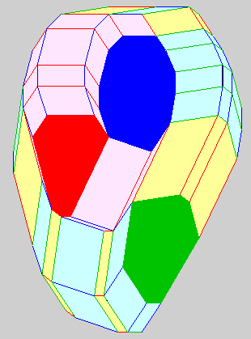

This course gives an introduction to the recent deep connections between convex geometry, optimization, and equation solving. Fundamental results covered include mixed volumes, the simplex method for linear programming, homotopy (or path-following) methods, sparse resultants, and relations to NP-completeness and solving systems of polynomial equations.
IMPORTANT NOTE: This course is now graduate level. Also, the connections between convex geometry and computational algebra covered in this course are currently not presented in any other course at MIT.
For a more detailed syllabus, click here. Want to see a cute application of linear programming to the ``diet problem?''